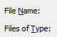
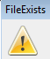
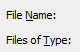
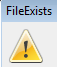

#Run Log Collector from ME7000 GUI
# First check if the GUI is running. If not, run the GUI first login using encGuiLogin, encGuiPassword
# Then, run the log collector to get outputLogFile logCaptureTime
#inputs: encIP=<> encGuiLogin=[] encGuiPassword=[] encLogFile=[] logOutputDir=[] logCaptureTime=[] logWaitTime=[]
#Usage: log_collector.sikuli
###############################################################
#common code for every sikuli code. Do not remove this section
from me7klib import *
###############################################################
#YOUR code start here
###############################################################
#This is your check for the inputs that you are expecting.
def Check_args():
#os.environ.get('kleverCurrentDir')
Check_arg('encIp')
if not Get_arg('encGuiLogin'):
Set_arg('encGuiLogin', 'Admin')
Print_debug('Encoder Gui Login is not given. Will use default Login: Admin')
if not Get_arg('encGuiPassword'):
Set_arg('encGuiPassword', '')
Print_debug('Encoder Gui Password is not given. Will use default password: <blank>')
if not Get_arg('encLogFile'):
encLogFile = "Logs_" + Get_arg('encIP') + ".zip"
Print_debug('Encoder Log File is not given. Will use default version: ' + encLogFile)
#if klever environment is active, let use
if Get_arg('logOutputDir'):
encLogFile = Get_arg('logOutputDir') + '\\' + encLogFile
elif Get_arg('kleverCurrentDir'):
encLogFile = Get_arg('kleverCurrentDir') + '\\' + encLogFile
else:
encLogFile = os.getcwd() + '\\' + encLogFile
Set_arg('encLogFile', encLogFile)
Print_debug('encLogFile = ' + encLogFile)
if not Get_arg('logCaptureTime'):
Set_arg('logCaptureTime', '0')
Print_debug('Capture Time is not given. Will use default 0')
if not Get_arg('logWaitTime'):
Set_arg('logWaitTime', '300')
Print_debug('Log wait time is not given. Will use default 300 seconds')
Check_args()
############################################################
#Main program definitions code start from this point
#Any global variables here
javaME7000MainTitle = 'ME-7000 - ' + str(Get_arg('encIp')) + ' - ' + str(Get_arg('encGuiLogin'))
javaME7000LogTitle = 'Log Collector'
#Any definitions are here
def Launch_collector():
Set_arg('menuName', 'Help')
Set_arg('menuSubName', 'Logs')
returnCode = runScript(sikuliScriptDir + 'nav_menu')
if int(returnCode) == 0:
Print_debug('Navigate menu Help->Logs successfully.')
else:
Print_text('Navigate menu Help->Logs failed.')
exit(1)
my_cmd = 'auto_windows_manager.exe windows_title=\"' + javaME7000LogTitle + '\" windows_action=2'
find_JavaLogTitle = Run_cmd(my_cmd)
if int(find_JavaLogTitle) == 0:
Print_debug(javaME7000LogTitle + ' launched successfully.')
else:
Print_text(javaME7000LogTitle + 'Failed to launch.')
#determine if log collector is already running
def Check_collector():
#run('auto_show_desktop.exe')
my_cmd = 'auto_windows_manager.exe windows_title=\"' + javaME7000LogTitle + '\" windows_action=2'
find_JavaLogTitle = Run_cmd(my_cmd)
if int(find_JavaLogTitle) == 0:
Print_debug(javaME7000LogTitle + ' is already running. Use current session.')
else:
Print_text(javaME7000LogTitle + ' is not currently running. Need to launch Main JavaGUI first')
returnCode = runScript(sikuliScriptDir + 'launch_java_client')
if int(returnCode) == 0:
Print_debug('Main java client launch successfully.')
Launch_collector()
else:
Print_text('Main Java client failed to launch.')
Exit_capture(1)
def Run_collector():
my_cmd = 'auto_windows_manager.exe windows_title=\"' + javaME7000LogTitle + '\" windows_action=2'
Run_cmd(my_cmd)
#Entering ip address
my_ip = Get_arg('encIp')
find( )
doubleClick(Pattern().targetOffset(48,3))
type(my_ip); sleep(1); type(Key.TAB)
#Entering output file name
my_logfile = Get_arg('encLogFile')
find()
click()
wait()
type(my_logfile); sleep(1)
find()
click(Pattern().targetOffset(-35,1))
sleep(1)
if exists():
find()
click(Pattern().targetOffset(-75,0))
sleep(1)
#Enter capture time
my_capturetime = Get_arg('logCaptureTime')
find()
doubleClick(Pattern().targetOffset(56,1))
type(my_capturetime); sleep(1)
#Press start button
find()
click()
sleep(1)
if exists():
find()
click(Pattern().targetOffset(-75,0))
sleep(1)
if exists():
Print_debug('Found security warning pop-up windows')
find()
click(Pattern().targetOffset(-43,0))
sleep(2)
#waiting for log collector to finish
my_waittime = int(Get_arg('logWaitTime'))
wait(, my_waittime)
#now check if file is existed
if os.path.exists(my_logfile):
Print_debug(my_logfile + ' saved successfully.')
exit(0)
else:
Print_text(my_logfile + ' not found.')
Exit_capture(1)
#######################################################
#Main program flow
Check_collector()
Run_collector()
)
doubleClick(Pattern().targetOffset(48,3))
type(my_ip); sleep(1); type(Key.TAB)
#Entering output file name
my_logfile = Get_arg('encLogFile')
find()
click()
wait()
type(my_logfile); sleep(1)
find()
click(Pattern().targetOffset(-35,1))
sleep(1)
if exists():
find()
click(Pattern().targetOffset(-75,0))
sleep(1)
#Enter capture time
my_capturetime = Get_arg('logCaptureTime')
find()
doubleClick(Pattern().targetOffset(56,1))
type(my_capturetime); sleep(1)
#Press start button
find()
click()
sleep(1)
if exists():
find()
click(Pattern().targetOffset(-75,0))
sleep(1)
if exists():
Print_debug('Found security warning pop-up windows')
find()
click(Pattern().targetOffset(-43,0))
sleep(2)
#waiting for log collector to finish
my_waittime = int(Get_arg('logWaitTime'))
wait(, my_waittime)
#now check if file is existed
if os.path.exists(my_logfile):
Print_debug(my_logfile + ' saved successfully.')
exit(0)
else:
Print_text(my_logfile + ' not found.')
Exit_capture(1)
#######################################################
#Main program flow
Check_collector()
Run_collector()